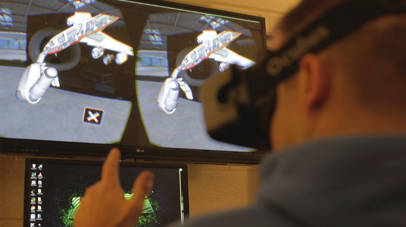
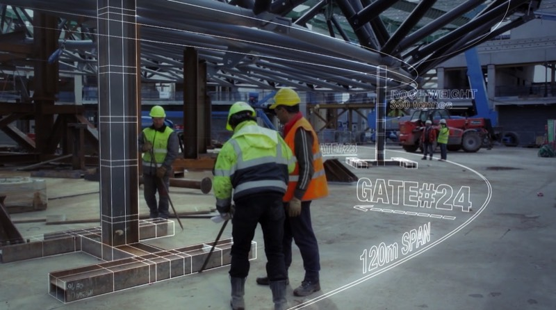
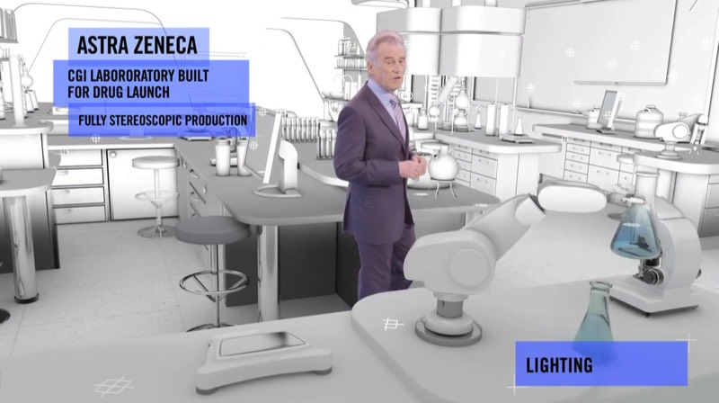
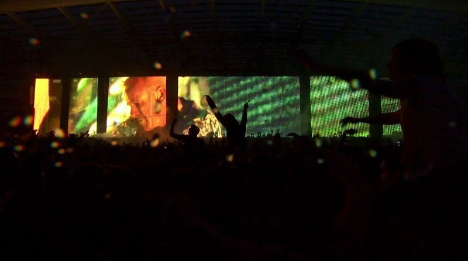

Future Visual is embracing virtual reality to create amazing platforms for learning and story telling.
The Shift
There is a massive shift occurring in how we consume content. In the last 10 years there has been an explosion of content, it is now omnipresent in our daily lives. Whilst the volume of content has exploded exponentially the way we consume it has stayed the same for nearly 100 years i.e flat screens that we look at. We now carry the flat screens around in our pockets but in terms of experience they are the same format since the Lumiere’s first cinema screening in 1895.
How Will It Change ?
Virtual Reality creates presence. You really feel that you are in the content you are watching. Presence means that you have a biological as well as psychological reaction to what you are seeing and so the ability to learn and absorb is magnified exponentially.
Why Now ?
Virtual Reality has been around for 25 years but the recent advances in smartphone technology has driven down the price of components so that Virtual Reality headsets are now $450 not $50,000 as they were 15 years ago.
Is It Here To Stay ?
The purchase of Oculus Rift by Facebook has provided a backdrop of financial security to the company who are driving headset hardware forward. Couple these facts with the increased skills across the VFX and content producing industries and you have a perfect intersection of developing knowledge base and excited customers.
What Is The Potential ?
Creating realistic environments in which customers and users can experience presence has massive potential in the fields of training, learning and entertainment. By being able to simulate difficult scenarios with 100% consistency and feed in approved responses means that you will be able to achieve better training in a shorter time frame with reduced cost .


- 
- 
- 